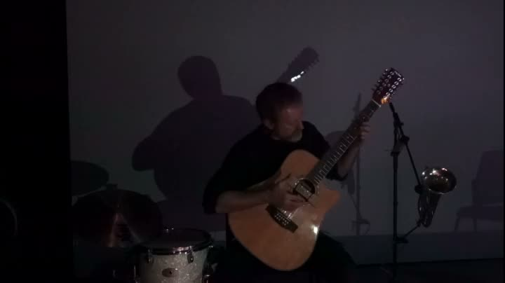
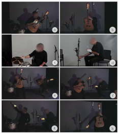
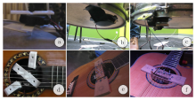
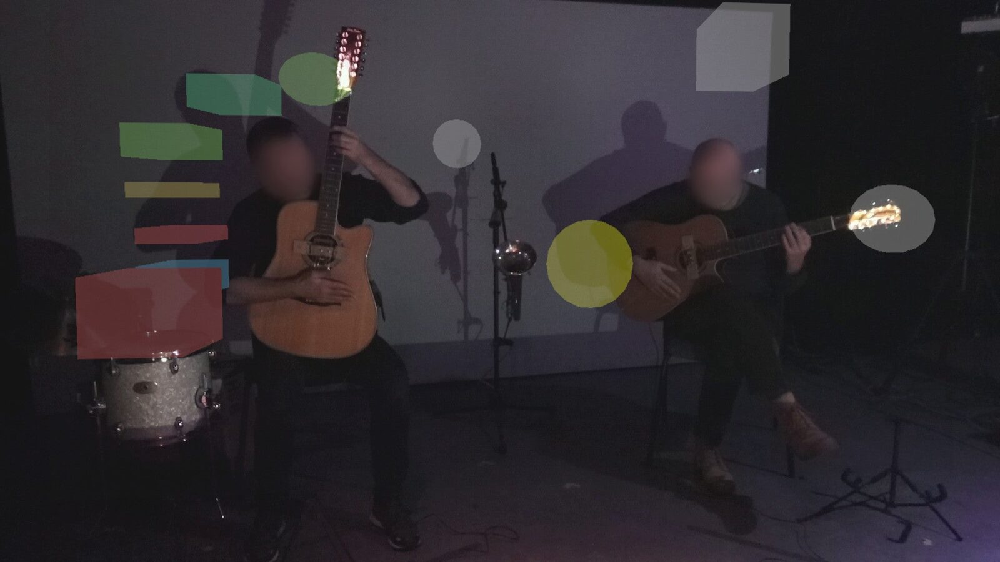
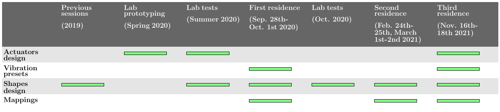
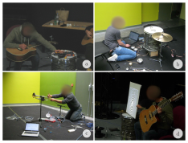

Vibrating shapes : Design and evolution of a spatial augmented reality interface for actuated instruments
Abstract
In this paper we propose a Spatial Augmented Reality interface for actuated acoustic instruments with active vibration control. We adopt a performance-led research approach to design augmentations throughout multiple residences. The resulting system enables two musicians to improvise with four augmented instruments through virtual shapes distributed in their peripheral space: two 12-string guitars and 1 drum kit actuated with surface speakers and a trumpet attached to an air compressor. Using ethnographic methods, we document the evolution of the augmentations and conduct a thematic analysis to shine a light on the collaborative and iterative design process. In particular, we provide insights on the opportunities brought by Spatial AR and on the role of improvisation.
Author Keywords
Actuated instruments, Spatial Augmented Reality, Performance-led research
CCS Concepts
•Applied computing→Sound and music computing; Performing arts;•Human-centered computing→Mixed / augmented reality;
Introduction
Musical instruments have been subject to intensive research aiming at augmenting their timbral capabilities, e.g. through the application of active vibration control methods: sensors and actuators can be used for modifying the acoustical or vibratory behaviour of string-soundboard instruments [1][2], trombones [3], gongs [4], or xylophone bars [5]. Another approach is to focus on augmenting the musician’s control. Such actuated instruments offer an extended sonic range and an intimate relation between gestures and sound [6]. Various techniques have been used to control the actuators, such as tracking the instrument or body movements, extending finger interactions on the instrument or extracting features from the produced sound. In parallel, Augmented Reality (AR) interfaces add virtual controls to the physical space with very little constraint on their shape or their placement with respect to the instrument. In this paper we investigate the use of Spatial Augmented Reality (SAR), a specific type of AR which uses projection of virtual content in the physical space, making it available for both the musicians and the audience and preserving the focus on the physical instrument and gestures. We evaluate its integration with multiple actuated instruments through a performance-led research methodology [7] with professional improvisers, analysing interviews and design logs across multiple residences. Our goal is to provide insights on the design and appropriation process of such technology [8], to inform the design of future actuated instruments.

▶Vibrating shapes in action. Available on https://assets.pubpub.org/roirio79/21649694910883.mp4
Related work
Actuated hyper-instruments
Opportunities arising from actuated instruments have been described in detail in the literature [6]. In particular they permit to take advantage of existing expertise of musicians, of the sonic richness of acoustic instruments but also to create a close relation between gestures and the musical response. This relation has enabled novel playing techniques, as in feedback instruments [9], and has been applied to a variety of instruments, from piano [10] to guitars [11] and drums [12]. The choice of gestures and sensors to control the actuators is therefore essential as they must preserve the intimate relation built with the instrument.
AR instruments
AR instruments tend to focus on mobile and wearable see-through technologies. Head-Mounted Displays (HMDs) strike as efficient platforms to develop composite interfaces. Tracing back to Augmented Groove [13], they have been used in piano compositions [14], piano training [15], augmented percussions [16] and commercial keyboards [17]. In performances, HMDs require a separate screen to reveal the content to spectators. Next to HMDs, mobile platforms are becoming popular for AR instruments. Brandon[18] released an interactive AR sound sculpture app. Santini used a mobile AR environment to interact with virtual sound objects. [19]. Other attempts at AR include using markers and webcams with external screens [20][21].
Spatial augmented reality (SAR) [22] has not been explored as much, yet it offers advantages such as a shared visibility for the audience and musicians by projecting augmentations directly on the environment. It is seen as a valuable tool for musical education [23][24]. Levin [25] proposed a spectrographic performance instrument by projecting a grid and marker augmentations on a dry-erase table. Reflets [26] projected virtual objects on the combined stage and audience spaces for musical performances. Later, Revgest [27] used a similar technology to extend digital gestural instruments.
Although it provides a flexible way of integrating controls in the instrument space, SAR with actuated acoustic instruments has not been explored.
Spatial Augmented Reality and Actuated Instruments


Current versions of the instruments. a/b/c/d the four instruments played individually. e/d/f/g/h: combination of instruments as played during the performances
Artistic objectives
This project was conducted in collaboration with four musicians (drummer, trumpet player, and two guitar players), all professional improvisers. All of them took part in the co-design of the actuators and initial choices on the actuation parameters. The refinements on all instruments, which we describe in more detail in Section 3.1 were done solely by the guitar players who played all four instruments in filmed performances, as shown in Figure 2
From an artistic point of view, the project followed the wishes of the musicians who, after previous collaborations which made use of synthesised sounds, wanted to rather control the acoustic sound produced by the instruments. They expressed a desire to "hide the actuation mechanisms" to the audience and place the focus on instrumental gestures and the interaction with the virtual shapes. The envisioned performance was a structured improvisation where they would explore different combinations of instruments.
Design choices
The resulting system is composed of four instruments: 2 acoustic 12-string guitars, 1 drum kit (floor tom and crash cymbal) and 1 trumpet (Figure 2, top row). In the final (filmed) performance, they are played by two musicians in various combinations (Figure 2, bottom row).
Virtual shapes are displayed in SAR using a combination of depth cameras and projectors, similar to those employed by Berthaut et al. [27], facing the musicians. This allowed us to place 3D meshes (spheres, boxes, cylinders) around them, which are displayed when intersected by the musicians’ hands or instruments. For example, Figure 2.a shows a sphere revealed by the head of a guitar. The information of intersection with the shapes (intersected or not, and the intersection position) is then sent to a Pure Data patch which generates the excitation signal sent to actuators. The shapes therefore act as 3D potentiometers to change the parameters of actuators which excite the instruments: tapping / rubbing guitar strings, making the drum membrane vibrate, changing the flow of air to the trumpet.


Evolution of actuators for the drum and guitars
Each guitar is equipped with an actuator placed in the sound hole below the strings (Figure 3.e) composed of metallic screws attached to a surface speaker (Dayton audio DAEX25CT-4). Screws are arranged so that they either rub or tap the strings. The excitation is controlled by injecting low frequency oscillations generated with a mix of sine waves, sawtooth waves and noise. They are defined with 5 parameters: activation, gain, frequency, sharpness (which interpolates between sawtooth / pulse and sine / continuous excitation) and randomness (which randomises the pulses and mixes the sine wave with noise). Both guitar players use two virtual shapes. One is placed at the usual position of the guitar head, which can be intersected while playing (Figure 2.a). The other is positioned above the musician and can be intersected with the guitar head when holding the guitar vertically (Figure 2.b). The chosen mappings were different between the shapes and the musicians. In particular, they defined presets for each shape, where some of the excitation parameters were fixed at specific values while others were mapped to the position of intersection within the shape (e.g. position on the horizontal axis mapped to the frequency of excitation).
The actuated drum uses the same excitation parameters as the guitars. The actuation mechanism consists of two surface speakers (Dayton Audio TT25-8 PUCK) attached to the resonance head below the floor tom. Objects (seashells, marbles, metal bowls, …) are then placed on the drum head and are excited by the transmitted vibrations, eventually colliding with each other. (Figure Figure 2.c). A cymbal is also attached to the drum so that objects on the head can be placed in contact with it, thus transmitting the vibrations to the cymbal. The instrument uses 6 virtual shapes. 5 parallelepipeds are placed behind the tom and arranged along a curve (Figure 4). They each have a different colour and are used to select excitation presets, with the lowest one deactivating the excitation. In Figure 2.g the musician is shown selecting a green box associated with a slightly randomised pulse. The last shape, a red box on Figure 1, is placed 10 cm above the drum (so that objects can be placed without entering the shape), covering the front half. It allows controlling the variable parameters of the selected presets, for example by mapping the randomness to the position of the intersection on the vertical axis (Figure 2.c). Contrary to the guitars, the selected presets remain active, i.e., the drum remains excited, even if the musician leaves the shape. This allows them to interact independently with the physical objects and the virtual shapes.
The trumpet is attached to a stand, with a rubber hose connecting the mouthpiece to a series of air tubes and a compressor. The actuation is performed by closing/opening the air stream using a solenoid valve. Due to differences in actuation mechanisms, the excitation parameters are not the same as for the other instruments. Only 4 parameters are available: activation, frequency, sustain, randomness. The gain can not be controlled by the current mechanism. The sharpness, to switch between clear attacks and a continuous sound, is controlled by adjusting the sustain, with sharper notes corresponding to a pulse and longer ones to a more continuous oscillation. A single virtual shape is positioned towards the bell, so that the musician can intersect it with their left hand while manipulating (e.g., pinching, pulling) the hose with their right hand (Figure 2.d). A single preset is defined with the depth axis mapped to the sustain and the vertical axis mapped to the frequency. Entering/leaving the shape respectively activates and deactivates the excitation.


Illustration of the position of virtual shapes around the musicians
Field Study
In performance-led research, the design process is iterative; the contribution of the artist directs the contribution of the researcher and vice-versa [7]. The process involves a more disciplined form of questioning for the artist [28], and is less quantifiable for the researcher [29]. Therefore it requires a more creative approach to highlight the outcomes of the partnership. In this section, we evaluate the proposed technology through the study of the co-design and appropriation process across the series of lab sessions and residences.
Timeline


Timeline of the study
The project alternated between lab sessions and residences (Figure 5). The first prototypes were designed in the lab. A number of tests were performed in the summer of 2020, before a first residence in the fall. A second session of lab tests was organised in October 2020. The second residence took place in the end of February. It ended with a filmed performance (due to COVID 19 restrictions). Finally, the last residence was organised in the fall of 2021, with a number of short filmed performances.
Data collection
In the span of the residences, we used ethnographic methods with the intention of documenting and analysing the evolution of the instruments. The notes were supported with images and videos which described the functioning of the instruments. After the last residence, we conducted semi-structured formal interviews the two guitarists. Each interview lasted around 75 minutes. Their responses were later used for thematic analysis [30].
Findings
Analysis of logs
We observed the evolution of each instrument and of the virtual shapes across all lab sessions and residencies, in order to understand how the technology evolved to adjust to the musicians’ artistic objectives.
Evolution of the actuators
The trumpet actuator remained essentially the same after its design in the first residence. Further changes were solely made to the structure and placement of the hose connected to the trumpet, in order to adjust the variety of sounds that could be obtained when pinching / pulling it.
A first prototype for the drum actuator was designed in the lab. As shown on Figure 3.a, it consisted of an acrylic structure attached to the top hoop of the drum, holding a surface speaker which moved an acrylic rod up and down to hit the drumhead at low frequencies. During lab tests, the prototype was however discarded because 1) the vibrations were not strong enough to make the objects move, 2) the sound of the rod hitting the drumhead was too audible, 3) the device constrained the interaction above the drumhead (with the objects and virtual shape). During the first residence, the choice was therefore made to switch to more powerful surface speakers and attach them below the drum to the resonance head so they can be hidden and provide more gestural freedom above the drum. Tests were made with one more powerful speaker and then with two smaller speakers, which proved powerful enough to vibrate objects placed on the drum head. The drum was also tuned to maximise the sound intensity. The prototype did not change during the following residences.
The first prototype of guitar actuators used a plastic structure attached to the sound hole. This structure held a surface speaker to which plastic screws were attached which, by moving up and down, would rub two of the strings. During the first series of lab tests, this actuator was found not to be stable and loud enough. The choice was made to switch to a wooden structure to attach the device inside the sound hole and to metallic screws to rub the strings. However, during the course of the following residences, musicians found that it remained difficult to obtain a clear enough sound, with the screws being either too close to the string (in which case they would only pull it without letting it vibrate) or too far, in which case they would not touch the string at all. In the last residence, it was therefore decided to modify the actuator and to add screws below the strings so that the heads would hit the strings, reducing the variability of the actuator and leaving more room for the string to oscillate.


Instrument design phases: a/b/c) Designing excitation presets for the instruments without the SAR component. d) Defining the shape and position of the shapes for controlling the drum
Evolution of the virtual shapes
After a first design session during the first residence, illustrated in Figure 6.d, the position and size of the shapes were regularly altered, in order to adapt to 1) the available interaction space between the instruments and musicians, 2) the desired control space, i.e. with dimensions that allowed for a sufficient range of values for each controlled excitation parameter.
The process of placing the shapes usually consisted in iterations of musicians expression "I want the shape to start here (points with guitar head) and stop here" for all axes, followed by trial and corrections. Researchers would also make propositions ("I can move it a bit lower", "It could be bigger"), and sometimes provide information on where the musicians were in the shape ("you’re just at the bottom of the shape now") if they couldn’t see it (on guitar heads for example).
The overall visual aspect of the shapes was also altered during the course of the project to increase their readability for both the musicians and the audience. The first versions used solid colours for the inside of the shapes (Figure 7.a) . This appearance was clear enough for the interaction with small shapes, e.g. the preset selection shapes for the drum. In the case of bigger control shapes, when the contours of the shapes were not visible at all times, the visual result was more that of a spotlight on the instrument than a slice of a 3D shape. First attempts had been made in the two previous sessions to define an internal texture for the shape, i.e. the grid (Figure 7.b), in order to visually break the contour of the instrument and to give a sense of homogeneity of the inside of the shape. During the first residence, we noted that this design did not provide information on the shape’s dimensions. It was therefore decided to switch to an internal texture which shows concentric layers replicating the surface of the shape ( a sphere in Figure 7.c).
Another important change in the virtual shape was the feedback from the actuator activity. During the first residence, this activity was visualised by changing the size of the corresponding virtual shape, so that pulses could for example be observed as contractions of the shape. However, this choice led to changes in the boundaries of the shape, which confused the musicians as they were trying to internalise where the shapes were around them. We therefore decided to map the activity to changes in the thickness of the internal layers, so that it is visible without modifying the boundaries of the shape.

Evolution of the virtual shapes used for parameter control with increasing readability: a) Solid colour boxes, b) Grids, c) Gradient layers, d/e/f) Results
Evolution of mappings
The mapping presets, i.e., which axis in the shapes was mapped to which excitation parameter, were defined during the first residence. As shown in Figure 6.a.b.c, the musicians were given the possibility to test the excitation parameters using either a MIDI controller or a Pure Data patch. In particular, they decided on a number of presets (2 for each guitar, 5 for the drum, 1 for the trumpet) where some parameters were at a fixed value and the others would be mapped to the interaction with the shape. These presets did not change during the remaining residences, except for the guitars after the actuator was modified in the third one.
However, within these presets and up until the last residence, multiple changes were made to the transfer functions of the mappings. For instance, musicians asked for an inversion of some parameters (e.g., so that the frequency increases when moving from front to back in the shape instead of back to front), or for changing the minimum and maximum values of the excitation parameters mapped to axes inside the shapes.
Design process
In the evolution of the instruments, shown in Figure 5, we observe two levels of modifications. The first, higher level consists in defining the overall configuration of each instrument, including the mapping configurations and actuation technologies, in order to reach a threshold of musicality, i.e., with sufficient room for musical expression. This level was addressed only once at the beginning for the trumpet and drum, but once again at the end for the guitars, with a change in the actuators. The second, lower level consists in refining the instrument, in our case the shape positions and appearance and the transfer functions of the mappings. In this level the musicians explore the space of interaction with the excitation parameters, appropriating it and asking for adjustments. Whenever they feel a constraint on their expression within that level, they then ask for a change at the higher level.
Thematic Analysis of Interviews
We identified 5 themes from the interviews. M1 played the guitar and the trumpet and M2 played the guitar and the drum.
From the academic to the artistic
When a new technology is presented to musicians with the intention of it being useful for their artistic vision, a long process of exploration and appropriation starts. M1: Music is not the first thing that comes to mind when I pick up the instrument, there is first a moment of appropriation, and of intellectualization of the device1.
As time goes on, they find new sensations and habits by exploring and practising during the residences. In a collaboration that involves multiple residences with a constantly developing instrument, it appears that the apprehension amplifies in and between sessions. M2: Between the first and last residences, the instrument was not the same, so it required comprehension and appropriation all along. Yet, there was also a habit that developed, we started to adapt faster. We had a memory of the placement of the shapes. Therefore, an appropriation phenomenon happened between residences, without even practising.
However, musicians’ creativity is enabled only when they pass the technical appropriation period. Without technical proficiency on the augmented instrument, they do not have the autonomy to search for musical structures or playing with each other. M1: In the last days, we began to appropriate the device and so could start to think of musical constructions. At some point we said "Ah, now we are starting to make music".
As soon as they reach the aptitude to start exploring musical ideas, they can evolve their musical structures to accentuate the affordances of the instrument. At this point they are able to spot the technological limits on which the researcher can work. M1: I realised that I had a musical idea and that it could not be materialised because I felt a limit in the deployment of the device.
This is also the point where the musicians should revisit their presets to reflect the changes in the instrument and their improved expertise. While the initial presets and constraints imposed by the researcher prove to be valuable for saving time, the cycle of modification - re-appropriation is indispensable for the creation process. M2: It is good to restart the process, to go back to the presets of the shapes, to reappropriate, or even to do setup toggles and have the same shapes with different settings.
Putting aside time constraints imposed by various factors such as availability and funding, the collaboration needs to last a long time for the instrument to mature. The modification - re-appropriation cycle can be infinite, yet the augmented instrument may be considered finished once actors who did not participate in the residence are able to use it. M1: When the instrument is ergonomic and simple enough, you can give the baby to someone else in good conscience.
The role of improvisation
There is a close relationship between exploration and improvisation. Creative processes of improvised music are beneficial in the conception of an augmented instrument.
Both musicians agreed that the constant search for new sounds and gestures, and the thirst for invention in improvised music fits well with the objectives of an academic research. M2: this improvisational approach and sound research inevitably helped a lot to put oneself in a research posture
They believe that, conventional or not, any instrument foremost questions their knowledge as a musician. M2 stated that discovering the possibilities offered by the augmented instrument is not very different than discovering unconventional use of a pedal or an effect to prepare for a performance.
M1 also stated that as an improviser, to avoid repeating they try not to use an element that works as a safety net. M1 : I try not to fall into recipes to stay in an attitude of exploration and experimentation
Shapes integrated in the internalised instrument space
Musicians grasped the role of the shapes and situated them in their physical and mental spaces to internalise the instrument. They identified the virtual shapes as the most important component of the instrument because they introduce major changes to their relation to the physical instrument. M1: The shape, to me, it was obvious. It was an integral part of the instrument (...) it is something that radically transforms the musical intention.
Musicians grasped the functioning of the shapes through physical movements. Entering and exiting the shapes, revealing their different parts, exploring their contours helped them to inscribe shapes in their minds. M2: You become aware of the existence of shapes by making gestures and moving your body in the space.
Both musicians agreed that once they reached an understanding of the shapes, visual cues became less significant. They were able to recollect the position, the size and the orientation of the volumes in which they performed the gestures. Eventually proprioception dominated over vision in shape perception. M1: For us it’s not a visual landmark, it is more like a proprioception. M2: When I closed my eyes I was almost seeing the contours of the shapes.
Experienced guitarists have indeed integrated proprioception in their interaction with their instrument. M2: Having played the guitar for a very long time, your body records it as an outgrowth of you. Consequently, the experience of conventionally using the instrument is beneficial to learning to use its shape-augmented version.
For example, band leaders are accustomed to using the head of the guitar to give signals therefore placing a shape on that peripheral area is coherent. M1: It’s a part of the guitar that I visualise quite easily.
The musician’s mental space is modified by adding or changing shapes. Placing the shapes on unusual positions drastically changes the relationship to the instrument. For example a shape placed above the musician (Figure 2.b), imposes to the musician to hold the guitar vertically. Different configurations change the role of the hands, and the type of gestures to be performed. M2 : It is as if in my brain, the right hand was in the space outside the body. And the left was trying to act in the middle space whose purpose was to vibrate the strings.
Nevertheless, the musicians encountered some difficulties internalising the shapes. Controlling parameters simultaneously on two axes was challenging for M1: I had trouble working on the depth and vertical axes at the same time. M2 needed to explore the limits of the shapes to find a reference point: It was not easy to find your way inside the shapes when they were too big.
An extended gestural and sonic vocabulary
Differences between the traditional and the augmented instrument change the musicians’ relation with the instrument and makes available a new, more subtle set of gestures.
Musicians felt that the function of the hands changed drastically when playing the augmented guitar. They agreed on shapes taking the role of the right hand which used to attack the strings directly. The volume and the recurrence of the strums are not controlled by ample gestures. Instead, they are governed by small variations in the position of the parts of the guitar in the virtual shapes. M1: It’s as if we were cutting our hand or we had to give it another purpose.
Even though the left hand’s function was mainly the same as in traditional ways of playing, i.e. fretting notes on the fretboard, its activity is modified by the shapes and actuators. Because of the shape on the head of the guitar, left hand’s mobility is constrained. M1: Guitarists are quite pathologically affected on this side, they always move their fingers very quickly in all directions. Here, it is not possible because the device and vibrations do not allow rapid movements which would entangle everything.
As a result, the guitar becomes a more subtle instrument which requires micro-gestures [31]. It puts musicians in a more intimate and meticulous relation with the instrument where they search for tiny variations which did not exist before. M2: I tried to use traditional stuff on the left hand but it was not suitable. Small gestures which only alter the timbre and vibratos, became real musical gestures that impacted sound production
Virtual shapes as musical entities
This part investigates the musicians’ perception and interaction with the multimodal system which unites shapes and vibrations. The musicians claimed that they were involved in two cognitive processes: M2: For me there are two channels that are parallel. but that the two were unified M1: They are intimately related. M1 : the vibration it’s first what happens in the shape.
M1 claimed that this peculiarity resulted in the shapes being perceived as a living entity ( M1 : I had the feeling of having an entity with which I could work, oppose or play) with which they could dialogue.
Viewing the shapes as entities provides a distinct approach to sound generation. For example, M1 found it intriguing that they could adapt their playing to the tempo and frequency of the vibrations they controlled via virtual shapes. M1: A pedal will transform something you generate. That’s not the case with the shapes. It does not transform, it generates what you will do and only then you can transform it. It’s a completely different way of thinking.
M2 thought that the entity extends to and covers multiple instruments. Accordingly, performing gestures across two instruments each musician controls simultaneously increased the bandwidth of the communication with the said entity: M2: being able to move and to extend the gesture on 2 instruments, we obtain an increased number of relations and a richer musical universe.

The two loops observed during the design process
Conclusion
In agreement with Benford et al.’s view of performance-led research in the wild[7], we find both in the evolution of instruments and in the thematic analysis of interviews that the design process is naturally iterative.
Our process involves two loops (Figure 8). The appropriation loop is needed for the musicians to reach a level of proficiency where they can express their musical ideas. In this stage, researchers make small adjustments to accommodate a faster exploration, e.g. changing the properties of the shapes. Musicians leave this loop when they do not have room for improvement. Consequently, they identify the bottlenecks that prevent them from materialising their ideas. If the bottleneck necessitates a hardware change (e.g. changing the actuators for the drum, or choosing to tap instead of rub the strings), musicians start re-appropriating the instrument, according to the new constraints [8].
Working with experienced improvisers clearly accelerated the appropriation loops as they were open to exploration and sound research. They were also accustomed to reflecting on their gestures. As a result, they developed micro-gestures, supporting the claim that actuated instruments would enable a performer to make otherwise impossible gestures for more intimate interactions [6]. Because the musicians pointed out that complex mappings increased the difficulty of micro gestures, we did not attempt to use more complex mappings [32] between the shapes and the excitation parameters.
All in all, SAR demonstrated a fine addition to actuated instruments by facilitating the appropriation of gestures and techniques. Supporting Berthaut’s work [27], it modified the existing instrument space to increase the focus on gestures and made use of musician’s proprioception. Additionally, we showed that shapes can re-purpose gestures that would otherwise be discarded. Finally, the combination of actuators and virtual shapes was perceived as a musical entity capable of dialoguing with the musicians.
As a future work, we aim to design a new guitar actuator capable of exciting individual strings. This actuator will enable us to map more advanced parameters of virtual shapes, such as the histograms of displayed pixels. In parallel, we hope to observe the role of improvisation in design methodologies more closely.
Acknowledgments
This work was supported by the “Fédération de Recherche Sciences et Cultures du Visuel, CNRS 2052”, the University of Lille and the Région Hauts-de-France.
We wish to thank the performing musicians Sébastien Baumont (M1) and Ivann Cruz (M2) for their contribution to this work. We would like to extend our thanks to Christian Pruvost, Peter Orins and the Muzzix Collective for the instruments and the insights they provided.
Ethics Statement
This study complies with NIME’s ethical standards. Participants were not deliberately selected, they were interested and available members of an artists’ collective we had previously collaborated with. They were remunerated for the first two residences by the university and continued the collaboration voluntarily. They all provided informed consent for their media to be recorded. All files were hosted on university servers. All authors participated actively in the research. Aside from common tasks, the first author conducted the ethnographic research, second author provided the AR framework, third author was in charge of the actuator prototypes and the last two authors supervised the actuator technologies.
Footnotes
Quotes from the musicians’ discourses are in italic font, as English translations from original.
↩
Citations
- ↩Benacchio, S., Piéchaud, R., Mamou-Mani, A., Chomette, B., & Finel, V. (2013). Active control of string instruments using xenomai. Proc. Of the Fifteenth Real-Time Linux Workshop, 133–141.
- ↩Benacchio, S., Baptiste Chomette, Adrien Mamou-Mani, & Victor Finel. (2015). Mode tuning of a simplified string instrument using time-dimensionless state-derivative control. Journal of Sound and Vibration, 334, 178–189. https://doi.org/10.1016/j.jsv.2014.09.003
- ↩Meurisse, T., Mamou-Mani, A., Caussé, R., Sluchin, B., & Sharp, D. B. (2015). An active mute for the trombone. The Journal of the Acoustical Society of America, 138(6), 3539–3548. https://doi.org/10.1121/1.4936901
- ↩Jossic, M., Mamou-Mani, A., Chomette, B., Roze, D., Ollivier, F., & Josserand, C. (2017). Modal active control of chinese gongs. The Journal of the Acoustical Society of America, 141(6), 4567–4578. https://doi.org/10.1121/1.4985108
- ↩Boutin, H., Besnainou, C., & Polack, J.-D. (2015). Modifying the resonances of a xylophone bar using active control. Acta Acustica United with Acustica, 101, 408–420. https://doi.org/10.3813/AAA.918836
- ↩Overholt, D., Berdahl, E., & Hamilton, R. (2011). Advancements in Actuated Musical Instruments. Organised Sound, 16(2), 154–165. https://doi.org/10.1017/S1355771811000100
- ↩Benford, S., Greenhalgh, C., Crabtree, A., Flintham, M., Walker, B., Marshall, J., Koleva, B., Rennick Egglestone, S., Giannachi, G., Adams, M., Tandavanitj, N., & Row Farr, J. (2013). Performance-Led Research in the Wild. ACM Transactions on Computer-Human Interaction (TOCHI), 20(3). https://doi.org/10.1145/2491500.2491502
- ↩Zappi, V., & McPherson, A. (2014). Dimensionality and Appropriation in Digital Musical Instrument Design. Proceedings of the International Conference on New Interfaces for Musical Expression, 455–460. https://doi.org/10.5281/zenodo.1178993
- ↩Overholt, D., Berdahl, E., & Hamilton, R. (2011). Advancements in Actuated Musical Instruments. Organised Sound, 16(2), 154–165. https://doi.org/10.1017/S1355771811000100
- ↩Eldridge, A., Kiefer, C., Overholt, D., & Ulfarsson, H. (2021, June). Self-resonating Vibrotactile Feedback Instruments: Making, Playing, Conceptualising. Proceedings of the International Conference on New Interfaces for Musical Expression. https://doi.org/10.21428/92fbeb44.1f29a09e
- ↩Andrew McPherson. (2010). The Magnetic Resonator Piano: Electronic Augmentation of an Acoustic Grand Piano. Journal of New Music Research, 39(3), 189–202. https://doi.org/10.1080/09298211003695587
- ↩Larsen, J. V., Overholt, D., & Moeslund, T. B. (2013). The actuated guitar: A platform enabling alternative interaction methods. SMAC Stockholm Music Acoustics Conference 2013 SMC Sound and Music Computing Conference 2013: Sound Science, Sound Experience, 235–238.
- ↩Lupone, M., & Seno, L. (2005). Gran cassa and the adaptive instrument feed-drum. Proceedings of the Third International Conference on Computer Music Modeling and Retrieval, 149–163. https://doi.org/10.1007/11751069_14
- ↩Poupyrev, I., Berry, R., Kurumisawa, J., Nakao, K., Billinghurst, M., Airola, C., Kato, H., Yonezawa, T., & Baldwin, L. (2000). Augmented groove: Collaborative jamming in augmented reality. ACM SIGGRAPH 2000 Conference Abstracts and Applications, 17, 77.
- ↩Santini, G. (2020). Augmented Piano in Augmented Reality. In R. Michon & F. Schroeder (Eds.), Proceedings of the International Conference on New Interfaces for Musical Expression (pp. 411–415). Birmingham City University. https://doi.org/10.5281/zenodo.4813449
- ↩Hackl, D., & Anthes, C. (2017). HoloKeys-an augmented reality application for learning the piano. Forum Media Technology, 140–144.
- ↩Brandon, A. (Accessed 07.04.2022). Augmented percussion. https://www.amybrandon.ca/ar-vr-1
- ↩Behringer. (Accessed 07.04.2022). Deepmind12 augmented reality. https://youtu.be/w76lNhqiaCw
- ↩Brandon, A. (Accessed 07.04.2022). Boundary x RE:FLUX. https://boundaryxgaudeamus.com/
- ↩Giovanni Santini. (2018). LINEAR (Live-generated Interface and Notation Environment in Augmented Reality). Proceedings of the International Conference on Technologies for Music Notation and Representation, 33–42.
- ↩Motokawa, Y., & Saito, H. (2006). Support system for guitar playing using augmented reality display. 2006 IEEE/ACM International Symposium on Mixed and Augmented Reality, 243–244. https://doi.org/10.1109/ISMAR.2006.297825
- ↩Laurenzo, T., Rodrı́guez, E., & Castro, J. F. (2009). YARMI : an Augmented Reality Musical Instrument. Proceedings of the International Conference on New Interfaces for Musical Expression, 268–269. https://doi.org/10.5281/zenodo.1177611
- ↩Bimber, O., & Raskar, R. (2019). Spatial augmented reality: Merging real and virtual worlds. AK Peters/CRC Press. https://doi.org/10.1201/b10624
- ↩Xiao, X., Tome, B., & Ishii, H. (2014). Andante: Walking Figures on the Piano Keyboard to Visualize Musical Motion. Proceedings of the International Conference on New Interfaces for Musical Expression, 629–632. https://doi.org/10.5281/zenodo.1178987
- ↩Doi, M., & Miyashita, H. (2018). Koto Learning Support Method Considering Articulations. Advances in Computer Entertainment Technology, 368–383.
- ↩Levin, G. (2006). The Table is The Score: An Augmented-Reality Interface for Real-Time, Tangible, Spectrographic Performance. Proceedings of the International Computer Music Conference, ICMC .
- ↩Berthaut, F., Martinez, D., Hachet, M., & Subramanian, S. (2015). Reflets: Combining and Revealing Spaces for Musical Performances. In E. Berdahl & J. Allison (Eds.), Proceedings of the International Conference on New Interfaces for Musical Expression (pp. 116–120). Louisiana State University. https://doi.org/10.5281/zenodo.1179028
- ↩Berthaut, F., Arslan, C., & Grisoni, L. (2017). Revgest: Augmenting Gestural Musical Instruments with Revealed Virtual Objects. Proceedings of the International Conference on New Interfaces for Musical Expression, 180–185. https://doi.org/10.5281/zenodo.1176213
- ↩Berthaut, F., Arslan, C., & Grisoni, L. (2017). Revgest: Augmenting Gestural Musical Instruments with Revealed Virtual Objects. Proceedings of the International Conference on New Interfaces for Musical Expression, 180–185. https://doi.org/10.5281/zenodo.1176213
- ↩Benford, S., Greenhalgh, C., Crabtree, A., Flintham, M., Walker, B., Marshall, J., Koleva, B., Rennick Egglestone, S., Giannachi, G., Adams, M., Tandavanitj, N., & Row Farr, J. (2013). Performance-Led Research in the Wild. ACM Transactions on Computer-Human Interaction (TOCHI), 20(3). https://doi.org/10.1145/2491500.2491502
- ↩Petelin, G. (2006). Visual Art Doctorates: Practice-Led Research or Research Per Se? Media International Australia, 118(1), 25–33. https://doi.org/10.1177/1329878X0611800105
- ↩Green, L. R. (2007). Recognising practice-led research... At last! Proceedings of Hatched 07 Arts Research Symposium. http://www.pica.org.au/__oldsite_2011/downloads/141/L_Green.pdf
- ↩Braun, V., Clarke, V., Hayfield, N., & Terry, G. (2019). Thematic analysis. In P. Liamputtong (Ed.), Handbook of research methods in health social sciences (pp. 843–860). Springer Singapore.
- ↩Jensenius, A. R., Sanchez, V. G., Zelechowska, A., & Bjerkestrand, K. A. V. (2017). Exploring the Myo controller for sonic microinteraction. Proceedings of the International Conference on New Interfaces for Musical Expression, 442–445. https://doi.org/10.5281/zenodo.1176308
- ↩Benford, S., Greenhalgh, C., Crabtree, A., Flintham, M., Walker, B., Marshall, J., Koleva, B., Rennick Egglestone, S., Giannachi, G., Adams, M., Tandavanitj, N., & Row Farr, J. (2013). Performance-Led Research in the Wild. ACM Transactions on Computer-Human Interaction (TOCHI), 20(3). https://doi.org/10.1145/2491500.2491502
- ↩Zappi, V., & McPherson, A. (2014). Dimensionality and Appropriation in Digital Musical Instrument Design. Proceedings of the International Conference on New Interfaces for Musical Expression, 455–460. https://doi.org/10.5281/zenodo.1178993
- ↩Overholt, D., Berdahl, E., & Hamilton, R. (2011). Advancements in Actuated Musical Instruments. Organised Sound, 16(2), 154–165. https://doi.org/10.1017/S1355771811000100
- ↩Hunt, A., Wanderley, M. M., & Matthew Paradis. (2003). The Importance of Parameter Mapping in Electronic Instrument Design. Journal of New Music Research, 32(4), 429–440. https://doi.org/10.1076/jnmr.32.4.429.18853
- ↩Berthaut, F., Arslan, C., & Grisoni, L. (2017). Revgest: Augmenting Gestural Musical Instruments with Revealed Virtual Objects. Proceedings of the International Conference on New Interfaces for Musical Expression, 180–185. https://doi.org/10.5281/zenodo.1176213